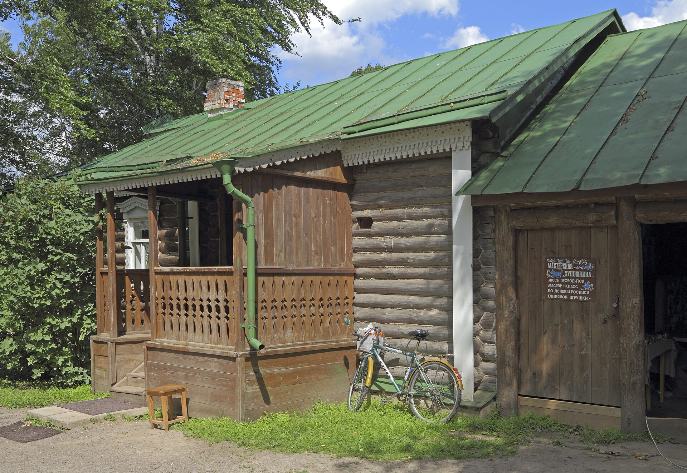
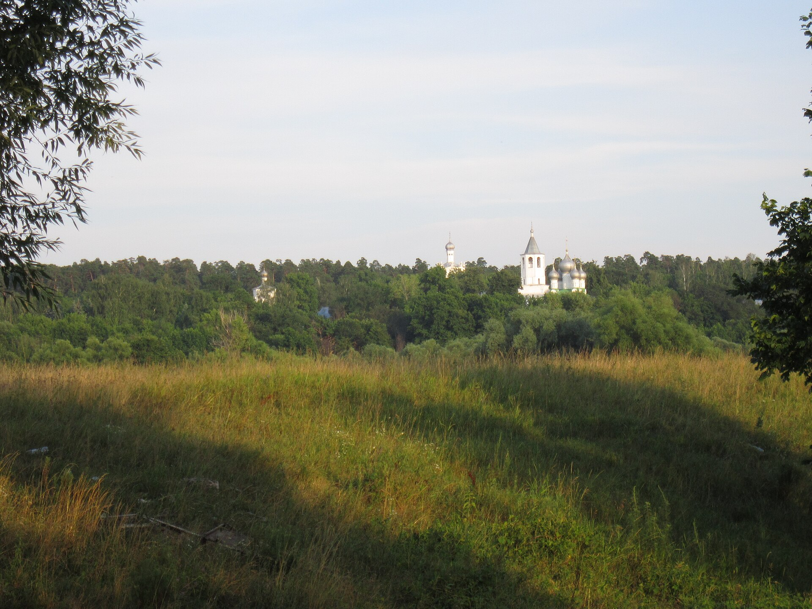
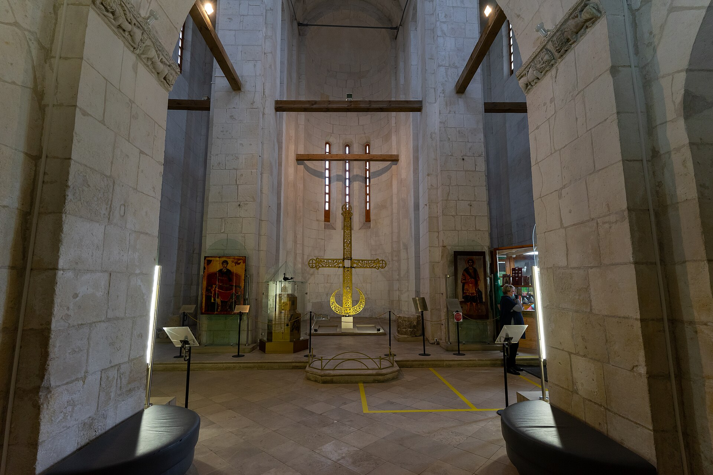
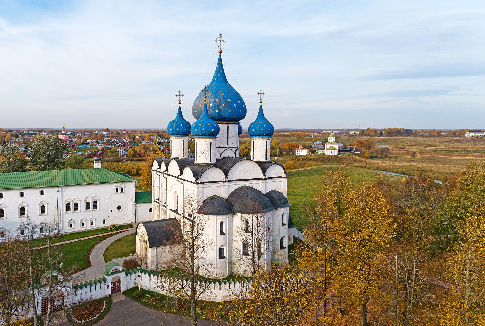

Рязань, Мещёра, Суздаль и Владимир: наш маршрут для друзей.
✎ Всё ниже собрано по сайтам музеев, расписаниям и справочникам; по ходу поездки дописываем, как было на самом деле.
Путеводитель от нас
Привет! Мы — пара из Петербурга, и в конце октября 2026 едем на неделю в Рязань и Владимир. Этот путеводитель мы пишем для друзей, которые захотят повторить маршрут: что посмотреть, как добраться, где поесть и на чём можно споткнуться. Часы работы проверяли на официальных сайтах, но перед поездкой всё равно уточняйте.
Маршрут
Санкт-Петербург → (ночной поезд) Рязань → Константиново → Солотча и Мещёра → (ночной поезд) Владимир → Суздаль (три ночи) → Владимир → (ночной поезд) Санкт-Петербург
Сколько дней
7 дней на месте плюс ночи в поездах: 2–3 ночи в Рязани (до 26.10), ночь в поезде до Владимира, три ночи в Суздале (27–29.10), обратно ночным из Владимира 30→31.10.
Когда ехать
Конец октября: золотая осень уже уходит, туристов мало, темнеет рано (закат около 16:45). Музеи работают по зимнему графику, так что планируйте основное на 10:00–17:00.
Фото
В каждой главе есть блок «Для фото / книжного блога» с атмосферными местами (подробно — на странице «Еда»).
Спокойный зелёный город на Трубеже и Оке. Кремль стоит на холме, вокруг него парк, и это главная прогулка. Рязань — база на первые дни: отсюда ездим в Константиново и Солотчу.
Что посмотреть
Рязанский кремль: территория открыта круглосуточно; Дворец Олега и исторический музей (Соборная, 22) 10:00–18:00, касса до 17:15, выходной — понедельник
Как было у нас (24.10): экскурсия по кремлю и Архангельскому собору, погода отличная
Улица Почтовая, Лыбедский бульвар, набережная Трубежа — вечерняя прогулка
Областная библиотека им. Горького с кофейней «Горький кофе» (ул. Ленина, 52)
Как добраться
Ночной поезд из Петербурга приходит на Рязань-2 (у нас 035А, 06:41). Наш отель у Рязани-1, это около 1,5 км, ~20 мин пешком или несколько минут на такси.
Поезда из Петербурга и во Владимир ходят через Рязань-2, а не Рязань-1, — смотрите вокзал в билете.
После ночного поезда: стойка в отеле «ПИК» работает круглосуточно.
Ранние завтраки: «Привет, Десерт!» открывается в 07:00, «Эмиль Бонтэ» в 07:30.
По понедельникам кремль и музеи закрыты, поэтому понедельник у нас отдан природе.
После экскурсии по кремлю удобно пообедать в «Собаке Павлова»: от кремля около 3 минут пешком, открывается в 12:00.
Наше мнение после поездки
☆☆☆☆☆
Допишем в поездке.

Константиново · 25.10
Родное село Есенина на высоком берегу Оки. Это музей-заповедник под открытым небом: несколько домов-музеев, село и бескрайний вид на пойму.
Что посмотреть
Усадьба родителей Есенина, Константиновская (земская) школа, дом священника Смирнова, Каретный двор, музей поэмы «Анна Снегина» — до 01.11 ежедневно 10:00–18:00, касса до 17:00 (сайт музея). Литературная экспозиция пока закрыта.
Церковь Казанской иконы — здесь крестили Есенина; сейчас на реставрации (по travelbelka, сент. 2026 — не перепроверено). Рядом часовня на краю обрыва — лучший вид на излучину Оки, место зовут Макаров угол (geomerid).
Смотровая у лестницы к Оке и большой портрет Есенина 1922 года у сцены; лестница к пристани длинная и крутая, подъём тяжёлый (geomerid).
Экотропа «Константиновское подгорье» под высоким берегом — 1,1 км, ~40 мин, входит в единый билет, открыта по октябрь (сайт музея).
Обрыв над Окой — закат около 16:45 (примерно)
Как добраться
Автобус № 132 с автовокзала «Центральный»: 09:40 → 10:56 (есть ранний 06:10 → 07:26), ~180 ₽. Обратно автобус в 20:00 до Рязани через Рыбное, в Рязани около 21:15. Такси около 50 км, ~1 ч (примерно).
Земская школа: парты с наклоном и старая азбука; дом Смирнова — «читающая» семья, книги и инструменты; веранда с мезонином у Кашиной — кадр под «Анну Снегину» (travelbelka, сент. 2026 — не перепроверено). Съёмка без вспышки и штатива.
Константиново: советы на день (25.10)
🕙 Всё открыто 10:00–18:00, касса до 17:00; литературная экспозиция закрыта, у Кашиной — только территория. С 02.11 зимний график (сайт музея).
🎟 Сразу берите единый билет 600 ₽ — все дома; 300 ₽ — только территория, без домов; экскурсия уже включает вход. Касса у входа, билет проверяют в каждом доме; работает «Пушкинская карта». Цены — по travelbelka (данные музея на сент. 2026), на сайте музея не перепроверены.
🌅 Порядок: утром смотровая у лестницы и портрет Есенина 1922 г. у сцены → дом родителей → школа → дом Смирнова → обед → экскурсия 15:00 → усадьба Кашиной и Ока на закат.
📸 Макаров угол — часовня на краю обрыва у Казанской церкви, лучший вид на излучину Оки (geomerid). Закат ~16:45 (примерно). Церковь, по отзывам, на реставрации.
🥾 Экотропа «Константиновское подгорье»: 1,1 км, ~40 мин, в едином билете, открыта по октябрь (сайт музея). Лестница к пристани крутая.
📚 Для книжного блога: парты с наклоном и старая азбука в земской школе, «читающий» дом Смирнова, дом с мезонином у Кашиной («Анна Снегина»), оранжерея с кофейным деревом (travelbelka).
🚫 Без вспышки, штатива, стабилизатора и дронов; еду и напитки на территорию нельзя (по travelbelka).
🍲 Чайная на центральной площади: в выходные 10:00–20:00 (сайт музея); курник и калинник. Цены выше городских — перекус с собой не лишний.
🚌 Обратно через Рыбное: автобусы 15:00 и 20:00, газель до Рыбного 17:00, ежедневно (сайт музея).
🗓 Афиша музея на 25.10 пустая — специальных событий не нашли.
Наши советы
Билеты: единый 600 ₽ — все дома и территория; 300 ₽ — только территория, без домов; экскурсия уже включает вход (travelbelka, сент. 2026 — не перепроверено). Касса у входа, у объектов билет не купить — берите сразу единый. Билет проверяют на входе в каждый дом.
Касса до 17:00, всё закрывается в 18:00 (с 02.11 график зимний) — сайт музея.
Порядок: сначала берег и смотровая (пока утренний свет и мало людей), потом усадьба родителей → школа → дом Смирнова, после обеда экскурсия и Кашина с Макаровым углом на закат.
Бесплатные туалет и Wi-Fi есть в музее (сайт музея). Цены в чайной и магазинах выше городских — перекус с собой не лишний (по отзывам, travelbelka, сент. 2026 — не перепроверено). Еду на территорию проносить нельзя, дроны/штативы запрещены.
Чайная на центральной площади: в выходные 10:00–20:00 (сайт музея); пробовать курник и калинник.
Обратно из Константинова через Рыбное: автобусы 15:00 и 20:00, газель до Рыбного 17:00 — ежедневно (сайт музея). Если 20:00 — до отхода можно посидеть в чайной.
Афиша событий на сайте музея на 25.10 пустая — специальных мероприятий не нашли.
Наше мнение после поездки
☆☆☆☆☆
Допишем в поездке.

Солотча и Мещёра · 26.10
Курортный посёлок в сосновом бору в 20 км от Рязани, ворота в Мещёру Паустовского. Хороший день для природы, когда в городе всё закрыто.
Что посмотреть
Солотчинский Рождество-Богородичный монастырь на Монастырской площади
Дом-музей И. П. Пожалостина, где жил Паустовский (выходной — понедельник)
«Тропа Паустовского»: от «Лесного бункера», маршрут «Чёрное озеро» 7,1 км, вход бесплатный
Сосновый бор и окские луга, закат над Старицей
Как добраться
Автобус № 22 с пл. Театральной, ежедневно каждые 20–30 мин, ~40 мин (расписание № 22); обратно останавливается на ул. Есенина, 4. Или такси ~20 км.
Скачайте аудиогид izi.travel к тропе заранее — в лесу связь не везде.
Национальный парк «Мещёрский» — Рязанская область, «Мещера» — Владимирская; Мещёра как край заходит в Рязанскую, Владимирскую и Московскую области.
Возьмите непромокаемую обувь для леса.
Наше мнение после поездки
☆☆☆☆☆
Допишем в поездке.

Владимир утром и переезд в Суздаль · 27.10
После ночного поезда из Рязани утро у вокзала Владимира, затем автобус в Суздаль. Окский заповедник из плана выпал — его можно посмотреть в другой раз (см. запасные варианты).
Что посмотреть
Кафе у вокзала («Нью-Йоркская бабушка» — ориентир)
Автобус до Суздаля: автовокзал напротив ж/д, ~45–50 мин, ~215–240 ₽, днём примерно каждые 30 мин
В Суздале в тот же день: кремль, Торговые ряды, медовуха
Как добраться
Поезд 037С Рязань-2 22:49 → Владимир ~06:05. Автобусы Владимир–Суздаль с автовокзала на Вокзальной пл., 1; последние обратно около 19:30–21:40 (уточнять).
Где поесть
Завтрак у вокзала во Владимире; обед/ужин уже в Суздале
Наши советы
Не затягивать утро во Владимире, если хотите успеть в кремль Суздаля до закрытия кассы (вход до 17:00).
Три ночи подряд в Суздале (27–29.10) — удобно не таскать вещи каждый день.
Наше мнение после поездки
☆☆☆☆☆
Допишем в поездке.

Суздаль · 27–29.10 (три ночи)
Город-музей с кремлём, монастырями и деревянными церквями над Каменкой. Мы берём три ночи здесь: 27-го кремль и ряды, 28-го зодчество и Кидекша, 29-го Спасо-Евфимиев и спокойные прогулки.
Что посмотреть
Суздальский кремль: территория 9:00–19:00, экспозиции и Рождественский собор 10:00–18:00, вход до 17:00
Музей деревянного зодчества: 10:00–18:00, вход до 17:00, выходной понедельник
Кидекша, церковь Бориса и Глеба (~4 км) — часы уточнить
Спасо-Евфимиев монастырь: ежедневно 10:00–18:00, вход до 17:00
Торговые ряды, медовуха, вечер вдоль Каменки
Как добраться
Из Владимира автобус с автовокзала напротив ж/д: ~45–50 мин. 30.10 днём обратно во Владимир тем же путём.
Медовуху и огурцы — в торговых рядах и дегустационном зале.
30.10 вещи удобно сдать в камеру хранения на вокзале Владимира перед прогулкой по городу.
Наше мнение после поездки
☆☆☆☆☆
Допишем в поездке.
Владимир · 30.10 (+ утро 27.10 у вокзала)
Белокаменные соборы XII века из списка ЮНЕСКО и, по желанию, Покров на Нерли. Основной день во Владимире — 30.10, перед вечерним поездом домой; 27.10 только короткий заход у вокзала.
Что посмотреть
Золотые ворота (снаружи; экспозиция на реставрации)
Успенский и Дмитриевский соборы, смотровая
По желанию: Боголюбово и Покров на Нерли (~15 мин + ~1,5 км пешком)
Камера хранения на вокзале — перед прогулкой
Как добраться
Днём 30.10 автобус из Суздаля. Поезд 131Г в 17:49 с вокзала Владимир-Пассажирский → СПб-Ладожский 06:54 31.10.
Экспозиция в Золотых воротах закрыта — смотрим только снаружи.
Поезд в 17:49 — музеи и Покров ставим на первую половину дня.
Наше мнение после поездки
☆☆☆☆☆
Допишем в поездке.
Если есть ещё день
Если есть ещё день: Касимов с ночёвкой (Ханская мечеть, Текие, Музей самоваров; автобус из Рязани ~3–3,5 ч), Спас-Клепики, Скопин, Пощупово. Подробнее — в «Запасных вариантах».